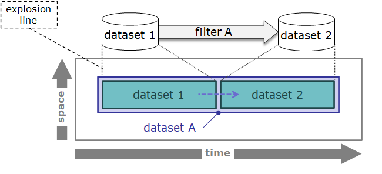
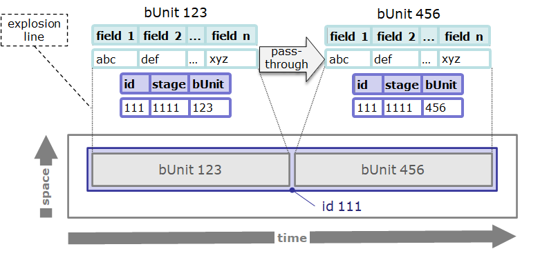

TtDT - Report - Appendix - Reference Iconography - Report - Inter-diagram mapping
The pipeline architecture and life history iconographies are used conjointly in pipeline architecture-linked life history diagrams to illustrate the footprint of individual bCLEARer stage pipelines in terms of data identities.
diagrams | notes and examples |
pipeline architecture-linked life history diagram | A pipeline architecture-linked life history diagram consists of a data type perspective pipeline diagram and the representation of the pipeline’s impact in terms of data identities in a life history diagram.
Explosion lines are used in a pipeline architecture-linked life history diagram to map the data appearing in the pipeline diagram to their footprint in terms of data identities in the life history diagram. example (dataset pipeline):
example (data item pipeline):
 |